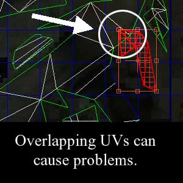
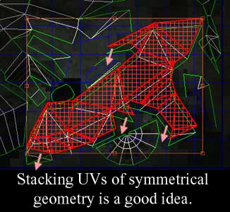

UDN
Search public documentation:
ImportingStaticMeshTutorial
日本語訳
中国翻译
한국어
Interested in the Unreal Engine?
Visit the Unreal Technology site.
Looking for jobs and company info?
Check out the Epic games site.
Questions about support via UDN?
Contact the UDN Staff
中国翻译
한국어
Interested in the Unreal Engine?
Visit the Unreal Technology site.
Looking for jobs and company info?
Check out the Epic games site.
Questions about support via UDN?
Contact the UDN Staff
UE3 Home > Static Meshes > Static Mesh Pipeline Tutorial
UE3 Home > Environment Artist > Static Mesh Pipeline Tutorial
UE3 Home > Environment Artist > Static Mesh Pipeline Tutorial
Static Mesh Pipeline Tutorial
Overview
Realtime Bump Mapping: Detail Meshes and Render Meshes
 The generated normal map is then applied in UE3 to a lower poly "Render" mesh, the end result being a mesh which looks much more polygonally complex than it actually is.
The generated normal map is then applied in UE3 to a lower poly "Render" mesh, the end result being a mesh which looks much more polygonally complex than it actually is.
Preparing Content for Export
A Few Words About UVs
The process of normal mapping requires special unwrapping considerations. For best results make sure UVs do not overlap. It is ok to stack UVs if the geometry involved is geometrically identical. For example, it is not a good idea to have different parts of a mesh overlap, like the following image:  It is fine to stack UVs, such as the case of mirrored geometry, as in the screenshot below:  These restrictions do not necessarily apply to the Detail mesh as it doesn't need to be textured at all for the SHTools process to function.Generating Normal Maps
The process of generating normal maps from the Detail mesh can be handled by the SHTools plugin, or by tools in 3DStudio Max, Maya or Softimage XSI. This tutorial will cover simple step-by-step instructions. Please note that the SHTools mesh processor and server were created before Max/Maya/XSI had their own normal mapping tools. We generally use those now for creating our normal maps. It is strongly suggested that you consider using a 3D Modeling package such as Maya to create normal maps.Exporting Geometry
Getting Content into the Engine
Applying Materials
Collision
Using Static Mesh Actors
- Select the StaticMesh in the Generic Browser.
- Right click in the level, go to 'Add Actor' and choose 'Add StaticMesh'. You should see the mesh appear in the level.